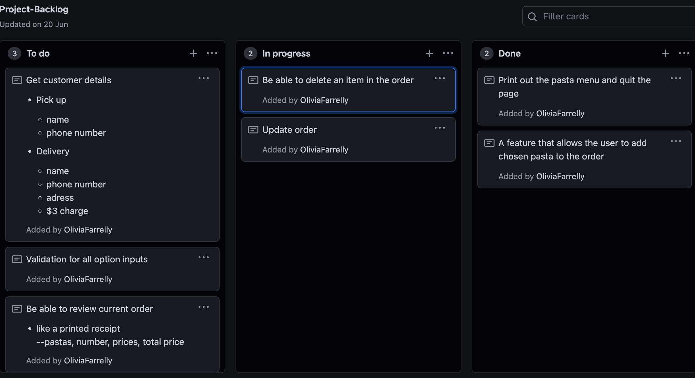
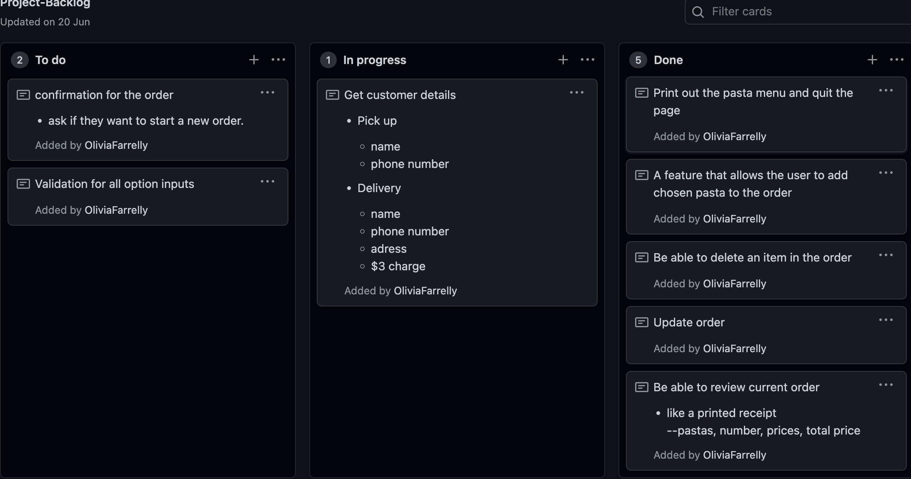
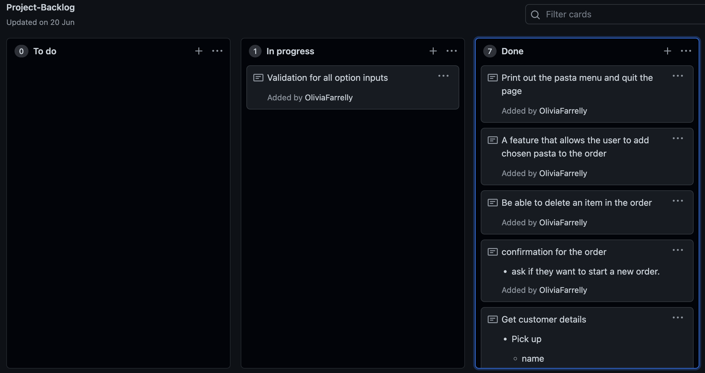
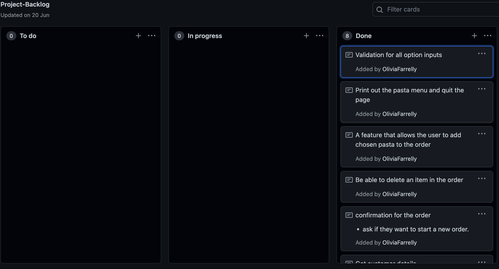

Brief
In this project we want to create three sprints to make computerised orders for a PastaBar. We want to include customer details, kinds of pasta ordered and pick up or delivery requirments into a computer and have it display the delivery details, itemised order and total cost.
Relevent implictions
Usability
- This is about how a digital product, for example, an ordering system, should be easy to operate. The ordering system should communicate to the user/person who is using it what is going on and what they need to do for it to work. For example words, the way the screen is organised or even colour changes. Also if the user inputs something wrong it should clearly/politely communicate that they entered it wrong. If they enter something that is far from what they should've entered they should be notified of what they did wrong in a clear polite way and the user should be able to have another chance at entering whatever they have to enter.The user can intuitively learn the program quickly. All options are easy to understand and are also easy to find actions to take. The program has error prevention and when something does go wrong the program should not crash and the user should get clear messages on how to fix things.
Functionality
- The end product should work properly. This means there should be no errors popping up on the screen if the user does something wrong. The product should not be giving inaccurate information or inaccurate feedback. For example, the total price of the order should be right and they shouldn't have any extra money added on for no reason. After an order is placed all lists should be cleared so it can start again.
Future proofing
- Things could change as the program gets older and so you could one day run it and it doesn't work. This means the program might need to be updated. It doesn't mean it will be updated by you, it could need to be updated by someone else. This means a program should be commented so that anyone who opens it can see what is going on so they have a clue of where everything is. The program should also be structured in a way that more data can be added easily without the whole program crashing. . The program should be able to be handed over to a different developer and they should be able to understand it quickly.
Sprint One
Brief
In sprint one I got all my kinds of pasta organised. This meant their name, description of what the pasta is and the price of the pasta. I then wanted to create a function on pycharm that printed out a menu. This menu included all the information for the customer to choose from and have a clear idea of what each pasta contains. I then put it in a loop so I could ask the customer what they wanted to do. This loop had 2 options “P” for the print menu when the name description and price of each kind of pasta were printed. And “Q” is where you could quit the program and stop running. This was a basic sprint one as I just wanted to get the information onto the program so I could have a baseline sonic that could work from there. I also did a bit of formatting to make the program look nicer and easier to understand. This is all I did in Sprint one.

Photo of the database working

Refelction
- I liked how clearly formatted it was. It was easy to understand and you can follow the program easily without getting lost or not understanding anything. I like how i managed to bold the names of the pasta as that is the main information and made it clear to customers what the pasta name was and what they would choose if they would like to order
- The description of the pats on the menu was another positive. Some people might not be able to understand from the pasta name what is in the pasta. The description clearly stated what the pasta was so people could easily choose what they wanted based on what was in the pasta dish.
- Next steps will be to add more pasta to the menu. I would like there to be more options to choose from as there aren't many. It should be pretty easy to add new kinds of pasta dishes to the menu as they are in lists so you just need to add new lists without having to alter anything. I will do this later on as it is easier to work with a small amount of pastas while creating the program rather than a wide range of options.
Other than these things it was a pretty basic program with not much to do on it so there isn't much I need to improve or change as the program is not doing a lot yet just printing out the menu and then quitting the program.
Sprint Two
Brief
In Sprint 2 I made a function where I could ask the customer what pasta they would like to add to their order. I printed out a little menu, this menu contains the name of the pasta and teh price as well as an index number for each pasta. I then asked what pasta they would like to add to their order. They provided me with a number that is next to the pasta. I then asked them how many of that type of pasta they would like to add to their order. I then put that into lists which I called customer order. I then made another function to review the order. This was very basic as it just printed out what was in their order so the name of the pasta and how many of that state would like to order.
Photo of the database working

Refelction
- I liked how I could now add pasta to my order. It was clear to follow and you didn't get too confused. You were able to follow it all quite easily. I liked how i could easily choose the pasta i wanted to add with a number rather than having to type the pasta name and rising out being spent wrong and then throwing and error
- I liked how when I went to add pasta to my order there wasn't any description of the pasta, just the passat name and the price. This made it clearer and easier. It made the screen less crowded and made ordering pasta easier. If they wanted to see the description they would look at the full menu which would include the description of the pasta.
- I also liked how I could review the order, however this could be improved. I could add the price of each pasta added and the total price of everything so the customer can see everything going on. This is going to be done in my next sprint
- Another problem that occurred was if someone added a pasta and then went and added two more of that pasta it makes a new list in their order there will be two lists. This means that when they go to review their order there will be two parts: the name of the pasta and two different quantities. In further sprints I would like to be able to group them all together.
Overall this sprint was okay. I was able to add new pastas and review my order. There were a few errors and in further sprints I would need to validate my program and deal with the repetition issues and everything. In the next sprint I want to be able to print a review order like a receipt so it has the price of each of the pastas and then a total price.
Sprint Three
Brief
In this sprint, I did a few things. The first thing I did was I added more kinds of pasta to the menu. I did this by adding new lists to my pasta list with the name of the pasta, a small description and the price. This was all I had to do for this as everything else fixed itself around that. The next thing I did was work on my review function. Right now it only prints out the name of the pasta you order and how many of the pastries you order. I wanted to make teh review more like a receipt meaning it had the price of teh pasta but also the price of the total number you order. I also wanted a total price at the end with all the pasta prices added up. I wanted to clearly lay out everything so it looked like a clear receipt. That was all I wanted to do for sprint three.

Photo of the database working


Refelction
- One thing I liked in this sprint was how there were more options of types of pasta you could add to your order. This made it more like a menu. There weren't too many options before this version and it was very basic. I was able to add these new pasta really easily. Because of the way I laid out the program I was just able to add a new list with the name of the pasta, the description and the prince and did this without having to alter the rest of the program which was very good.
- Another thing I liked was how the review order function printed out like it was a receipt. I liked how you could look at the review function anytime and it would update with the new pasta you added. This was good as every time you changed something you good review your order again and get a new receipt
- One thing that needs to be improved is still like the previous sprint which was if someone added pasta and then went and added two more of that pasta it makes a new list in their order there will be two lists. This means that when they go to review their order there will be two parts: the name of the pasta and two different quantities. In further sprints, I would like to be able to group them all together.
- One thing I need to fix on the program is if you want to remove pasta from your order. I need to create a new function for this as it needs to be separate from the adding function and everything else. This will be a whole other sprint.
Overall this sprint was good. It did what I wanted it to do as it printed out a nice receipt with everything you would have on it. For example, it had the number of each pasta you order, their price and then a total price at the end. I still need to validate my program and deal with the repetition issues and everything. Next sprint I want to be able to remove pasta from my order.
Sprint Four
Brief
In this sprint, I did a few things. To start with I wanted to create a function where I could remove kinds of pasta from my order. I created a function where it would ask you what pasta you would like to remove and it removed all of that type of pasta from your order. The next thing I wanted to do was create a function where I could update pasta in my order. This was for people who didn't want to delete all of the pasta orders of that type of pasta; they were able to change how many they ordered. This was all my focus was on for sprint 4
Photo of the database working

Error
Photo of teh error message

Photo of the code that caused the error

What caused the error
When working with updating pasta on the menu my program ran into an error. The error said, “ ‘tuple’ object does not support assignment”. At first, I was very confused about what this meant and then my teacher explained. A tuple for example (“A”, “B”, “C”) is immutable and can not be changed. Whereas a list for example [“A”, “B”, “C”] can be updated and changed. Looking at the code above for where the error occurred I was trying to change this list. The list has curly brackets which meant it was a tuple. This meant it couldn't get updated so therefore it threw an error. To fix this I had to go change the “(“ to “[“ on ant lists I was trying to update or change. I also decided that I should make the past list tuple. A 2d list of tuples cannot be inadvertently changed. This meant it would stay how it was and would throw any errors or get all messed up. This helped stop a bunch of errors and made the program work properly and kept any list intact that didn't need to be changed and allowed lists that could be changed to be changed.
Refelction
- One thing I like about this version is how if a person adds the wrong type of pasta they are able to remove it from the order with a click of a button. This then updates their order and their new total and is just really easy to navigate if you make mistakes
- Another thing I liked about this version is if the person adds too many or too little of a type of pasta and they just want to update their order, they are able to do that by clicking a button. They can then clearly choose what they want to update and they can change it to the amount they actually want. This also updates their order and then alters the total of how many they have ordered now.
- Something that didn't go so well in this version was to go with the update order. When trying to work with this I had to alter and change it. It was quite confusing to work with and everything kept crashing. In the end, I got it working and it made my ordering system so much better and easier for customers who make mistakes.
- Another thing that needs some work is validation, if the user doesn't type in the right thing the program will crash. I need to validate it so if the user does not put in the correct number or value the program will ask the question again because they would've just made a mistake. This will make everything easier for the user.
Overall this version of the program has come out how I wanted it. It removes pasta from the order and the order can also be updated. There were a few bumps along the way but in the end, I got it to do what I needed to do. The next steps for the program would be to ask and retrieve the customer details. Asking if they would like pickup or delivery, getting their name, phone number and address for delivery. Also, I need to add three dollars to the order total if they would like it to be delivered. Another thing I need to do is validate my program at the end when everything else is completed.
Project backlog
Around this point of the program I made some edits to my project backlog. WHen working through I realised that customer details and validation were not as high a priority as adding and removing kinds of pasta from the order as this was the main thing the program did was create an ordering system. After adding pasta I decided it would be a good idea to work on removing and updating the past order before I did anything else
Sprint Five
Brief
In this sprint, I wanted to focus on one thing and that was getting the customer details. I wanted to know if they wanted pickup or delivery. If they chose to pick up I asked for their name and phone number for their order. If they chose delivery I asked for their name and phone number again but this time I also asked for their address. Then in the review order function, I printed out the details as that function is like a receipt. I also then added three dollars to their total price as delivery requires a three dollar surcharge. This is all I did in sprint 5.
Photo of the database working
Refelction
- One thing I liked about this version was that the customer could decide if they wanted it to be picked up or delivered. This was the first question I asked when the customer went to the customer details section. This then led to asking more questions depending on what they chose. Getting their name and phone number for both options but getting their address if they wanted it delivered.
- Another thing that worked well in this version was adding three dollars to the total price if they wanted it delivered this way. In the review of the order, if they chose delivery when they entered their customer details they could see that there were three dollars added and this helped them to understand why there was more money not just doing it without them knowing.
- One thing that I liked was how the customer details were printed when they reviewed their order like a little receipt. This helped them see that everything we correct and that they will be getting the right order as it's under their name. It helps them feel more at ease as they know what is going on.
- Two things that need to be improved is validation. This is still a problem as if the user types in an incorrect value number or anything the program will crash instead of asking them again because they mistyped something. One Last thing that needs to be added is a confirmation section, this is where they can finish placing their order and cancel it or send it in and then they can either start a new order or quit.
Overall this version did everything I wanted it to do, It got the customer's details and it printed them out in the review order function as well as adding three dollars onto the price if needed. Everything we clearly laid out and the customer could see what they were doing. The next steps are to add the confirmation function and get the order to be finished and ask the user if they want to start a new order. This is the last part of the ordering system that needs to be done and then the program needs to be validated to make everything easier for the user.
Project backlog
At this point in my program I changed the order of what I was doing on the project backlog again I reviewed my order after the previous sprint. I then decided it was time to get customer details first before validation as I would need to validate this input as well. I then also added a confirmation task to do in my project backlog which again came before validation. These were the main priority as they would need to be validated so I left validation till all my code was done so I could clearly validate everything.
Sprint Six
Brief
In this sprint, I wanted to create a confirmation function. I wanted this function to first check if both the customer details and the customer order lists are full. If not, ask them to go make their order and then take them back to the menu. If those lists are full then ask them if they want to place their order. If yes, say thank you for ordering, then ask if they would like to make another order or quit the program. If they quit then stop the program if they want to make another order take them back to the menu. If they want to cancel their order then clear the lists and ask them if they want to make a new order and the same things as above apply. These are the finishing touches I needed on my program besides validation.
Photo of the database working
Refelction
- One thing I liked about this version was how I could confirm my order. It checked to make sure there was data in both the customer order and the customer details. If there is nothing it would take them back to the homepage as they haven't entered their order yet. If there was data in both those lists it would ask if they wanted to confirm their order.
- I liked how in this version if they didn't confirm three orders it took them back to finish up their order. I also like how if they did confirm the order they were able to place another order if they wanted to if they said yes all lists would be cleared and a new order would be started if they said no then the program would quit.
- I liked how the ordering system had a nice finish. I liked how it could finish everything off. I liked how I could confirm my order and could place a new order if I wanted to. It helped tie everything together and make everything seem like an online ordering system. It helped make everything clean and just finished off the program.
- One thing I need to work on is I need to validate all the times I input things. This is to make sure the user does not order too many of each pasta or when they type in something it doesn't matter if it's lowercase or uppercase it will still work. This will help make the ordering system run smoothly with no big problems.
Overall this version did what I wanted it to do. I could confirm their order and I could place another order if I liked or I could quit the program after ordering the first order. I liked how this added a nice finish to the program. The next step and final step is to validate my program to finish it off and make everything run smoothly and cleanly.
Sprint seven
Brief
In this sprint, I finished everything off. The main thing I was focusing on was validation. I validate any input section. This was to make sure it was case insensitive and also to make sure the person placing the order didn't order more than 10 of each pasta as that is a bit too many. This was also to make sure any input wasn't too long. I also just neatened everything up and made everything look good and made everything easy to understand.
Photo of the database working
Refelction
- One thing I liked about the Thai version was how everything was tied together. I liked how clean it was and how much easier it was to function. I made it prettier to the eyes and just made everything less crowded on the page and just overall easier to understand. This is important as users want the program to be easy to navigate without being too overwhelming and crowded.
- Another thing I liked in this version was how when you need to enter a single letter it's always supposed to be capitalised or it will not work. However, I validated the program so that if you typed an “R” of an “r” it would do the same thing. This made it easier for people to work through the program and to work at pace while making fewer mistakes
- I also liked how I validated any string or integer that was written. Any input was validated. This helped a user not type too little or too much throughout their order. It also helps to make sure that a user doesn't order more than 10 of a kind of pasta which is just a bit crazy and will seem more like a mistake.
Overall I liked how clean this page looked now. I liked how easy it was to navigate. It did everything I needed it to do and everything was working smoothly. For The version, I did a few trials. I had to test to see the limits for the min and max for both the string and integer inputs. I also had to test an editorial to see how I could make it case insensitive. The trialling helped me to test out different max and mins and find out how everything would work without causing my program to crash. Overall I really liked how my program turned out.
Project backlog
At this point in my program, I was coming to the end. I had finished everything I needed in good order so that everything played out nicely. I added everything I had written down that I needed to do and the last thing was validation. I kept this to last as I wanted to validate every input in my code. If I did it earlier on in the code I would've had to keep validating as I was working on the program. Leaving it to my last task allowed me to validate everything in one group which made everything easier and I knew that I had validated everything and everything was working properly. I knew this was going to be the part that took the longest and the most thinking so I left it to the last thing to do so I could really focus on it without working about anything else.
After validation was done I completed every task on my project backlog and my program has come together with who I wanted it to come together and had everything I wanted it to do on there. Here is a photo of my finished backlog.
Adressing Relevant Implications Summary
Throughout working through my program I always kept in mind the relevant implications and tried to follow them whenever I could. I thought about the cultural, intellectual property, usability, functionality and future proofing implications through working on my program.
Usability
- When doing my code i made sure every time the user had to enter something i validated it this meant that if the user entered something that fat from being right or would cause an error the question would be asked again which gave them a second chance it also meant there were no program crashes. For example, If they had to enter either the letter “Y” or “N” and they entered “Q” The question would be asked again. Also, make sure that every time I communicated with the user I was being very clear and polite as I don't want to be rude. For example, when the user enters something wrong I say something like “You entered your details wrong, try again”. or when they enter something like when they are ordering pasta and they exceed the limit of how many of each pasta type you can order or they enter a negative number or something I tell them that the input is too small or too large. Users are clear about what to do and make it easy for them to understand. Everything is case insensitive meaning if they type capitals or lowercase letters it won't crash the system it will just work like normal. Which allows the user to go through the program smoothly. Also, the ordering system had a simple menu that allowed people to easily understand it and not be too confused. For example, the function Add pasta to order on the menu is labelled “A” and the remove last function is labelled “RE”. Thai helps people clearly understand what to do and makes everything easier to work and function as everything just makes sense.
Functionality
- Through the development of the program, I made sure to run parts of the code to make sure it didn't crash. I also tested parts of the code to make sure that all the information that was being given was accurate and wasn't incorrect. When it came to validation I pulled out separate pieces of code into my testing page. This helped me focus on the pieces of code I needed without worrying about anything crashing or not working properly. I also got other people to test my ordering system. This helped me to make sure that someone who didn't know my program could easily work through it. I asked for feedback and worked through everything based on people's comments. I made it easier to look at by giving breaks in the code when needed so that people could see what they were doing when going through the ordering system. Getting peel to test it helped me to make sure everything was validated and it all worked properly. I got people to not follow instructions when ordering to test to make sure no errors would be thrown. System testing throughout the program helped me to make sure things run smoothly and didn't crash. I made sure I tested it fully at the end of each sprint to make sure the program was working properly before I started the next sprint. I also got people to constantly test my programs. In the end, I got Aaliyah to test my program. I did this to make sure that someone who didn't know my program could use it without it crashing. I also got my mum and dad to do the same things. This helps to ensure there were no crashes and it would work properly and people that didn't understand the code and the program itself could use it without getting confused.
Future proofing
- When working through my program I made sure to comment on anything that I thought would be useful to know what it was for. I explained/commented when I put loops or functions. I also commented on what each little part of the code was so that if anyone else was to try and fix the program they would know exactly what everything was and it was very clear to read. I also made sure that it was structured in a way so that it was easy to add more kinds of pasta to the pasta menu or remove pasta that is no longer on the menu off the ordering system. I also made sure it was easy to add code in the future if it needs to be updated. I had everything in different functions. This meant that if anything new needed to be added a new function could be created without having to adjust the full system and rising everything crashing. I doctyped the program as well which helped people to clearly understand what was going on in the coding part of the program. I made sure that the only thing that needed to be updated as the main menu function if something needed to be added. everything else can stay untouched. If they need to add or delete pasta from the menu the main function does that if they want to add new functions they play iy n the main function then they create a new function elsewhere. This allows the program to stay clean and risk fewer problems arising. I also made sure it was easy to add code in the future if it needs to be updated. I also did something called a pep8 check. This pep 8 check was attached through the program which made sure my code was correctly formatted according to python conventions. The pep 8 made sure everything was formatted correctly to how python liked it. If things were incorrect it told you what was incorrect you could click on the error and it would take you what line was incorrect. The errors were highlighted in the code and if you click the problems button at the bottom of the program there was a clear and easy description of what was going wrong and what you needed to fix. They made it easy to understand what was incorrectly put in. For example, there weren't two clear lines before a function or there were too many spaces at the end of a line. It also made sure there weren't too many words on a line so that it was easy to understand and read. I learnt that python has a specific way they like to format their code and how they are very specific when it comes out things like a clear line at the end of the program.
Here is a photo of the pep 8 sections. There are still some problems there. These problems do not affect the program when it's running; they just think that the variables are a bit odd as they are single letters rather than a full word. This doesn't affect the program. The errors aren't in red or yellow so they aren't major errors or will stop the program from running. It is more for the visual look of the program.
This button will take you back to the top of the page